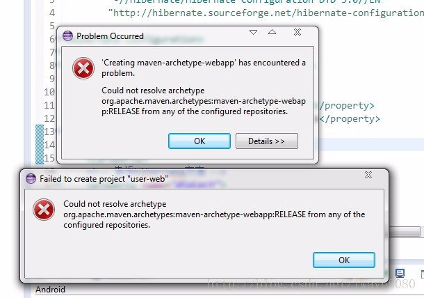
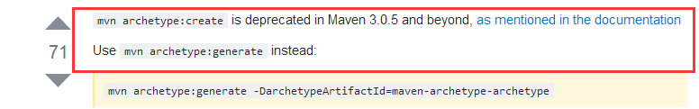
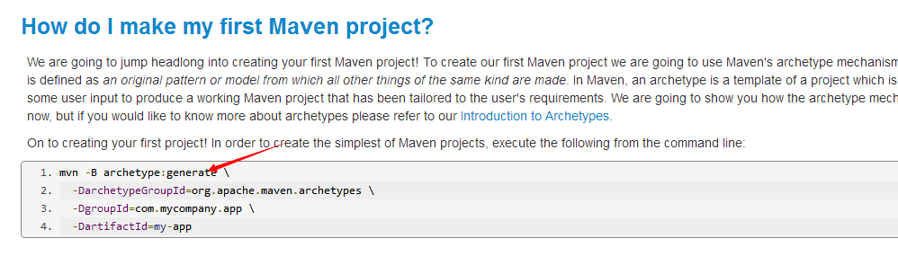

今天在使用Eclipse建立Maven的web项目时

百度谷歌了很久，出现其maven-archetype-webapp问题的人有很多，
但是却没有人将问题和解决方案发布出来，所以今天总结下。
出现这个问题可能有很多种原因，但大部分是我现在遇到的
先说出现问题的原因：
在你的本地仓库里没有maven-archetype-webapp文件的配置，
如:我的本地仓库是放在D:\java\maven下，
并且已经在setting.xml配置了 <localRepository>D:/java/maven/repos</localRepository>，
那么你在到你的这个目录下找 ：
D:\java\maven\repos\org\apache\maven\archetypes;
在这个目录下我原本就有maven-archetype-webapp文件夹，
但是里面的信息不全，所以导致Eclipse识别不了，不能创建Maven的web项目
解决办法：将这个maven-archetype-webapp文件夹删除，
然后随便建立一个目录，如我这里在D:\app ,
打开cmd命令 ，cd到D:\app，执行
mvn archetype:create -DgroupId=ce.demo.mvn -DartifactId=webapp -DarchetypeArtifactId=maven-archetype-webapp
mvn archetype:generate -DgroupId=ce.demo.mvn -DartifactId=webapp -DarchetypeArtifactId=maven-archetype-webapp
命令，
注意，上面的命令不能有回车换行之类的输入，不然cmd不认
它会在app目录下创建一个Maven-web项目,
这个没关系，到时候删除就行了，不影响什么。
它还会自动下载maven-archetype-webapp这个文件夹以及里面的内容，
这时候你在开Eclipse创建Maven的web项目就畅通无阻了
使用maven3.3.9 版本，进行命令行创建项目时输入以下命令创建失败
mvn archetype:create -DgroupId=com.zang.maven -DartifactId=system-parent -DarchetypeArtifactId=maven-archetype-quickstart -DinteractiveMode=false
主要报错信息：Could not find goal ‘create’ in plugin org.apache.maven.plugins:maven-archetype-plugin:3.0.0 among available goals crawl, create-from-project, generate, help, integration-test, jar, update-local-catalog -> [Help 1]
原因：版本命令冲突，即在maven3.0.5以上版本舍弃了create，使用generate生成项目

解决办法：将create改为generate
mvn archetype:generate -DgroupId=com.zang.maven -DartifactId=system-parent -DarchetypeArtifactId=maven-archetype-quickstart -DinteractiveMode=false

官方文档地址
https://maven.apache.org/guides/getting-started/index.html
Creating a webapp
Use maven-archetype-webapp to start a simple webapp maven project. The command is as follows
mvn archetype:create -DgroupId=[your project's group id] -DartifactId=[your project's artifact id] -DarchetypeArtifactId=maven-archetype-webapp
This would then create a maven project.
. |-- src | `-- main | `-- java | |-- resources | |-- webapp | | `-- WEB-INF | | `-- web.xml | `-- index.jsp `-- pom.xml